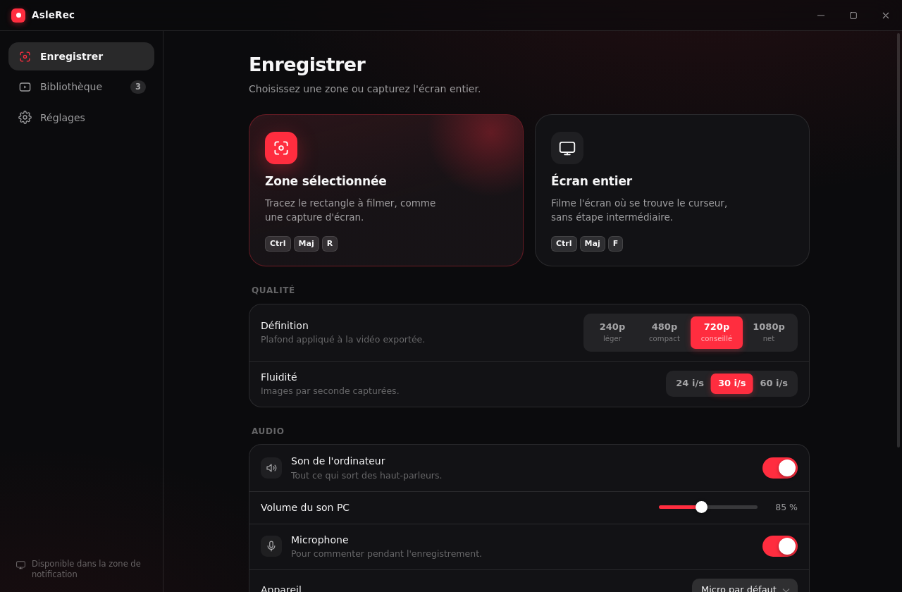
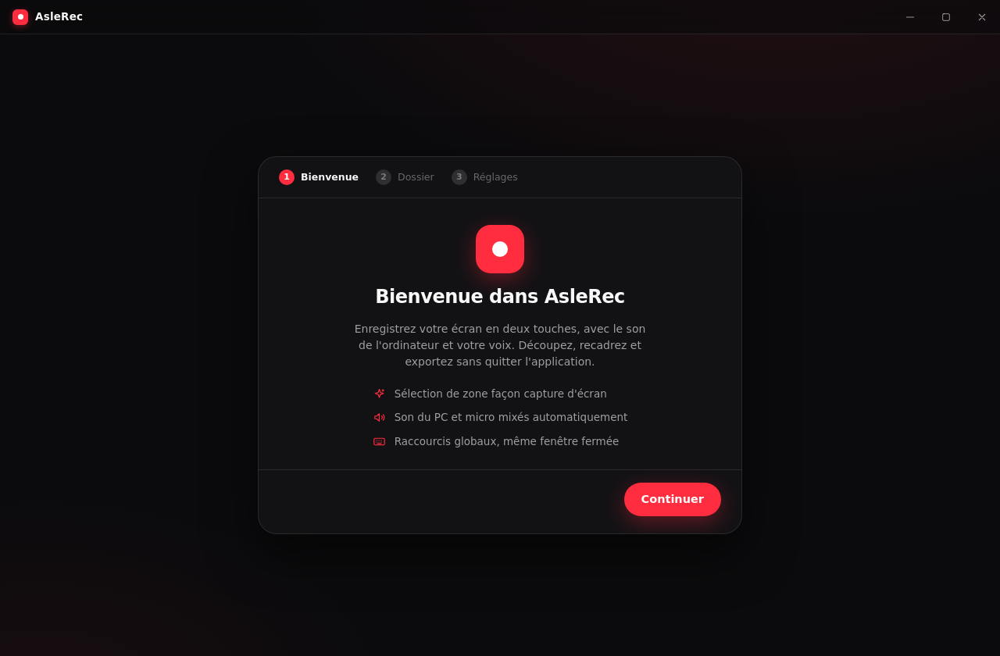
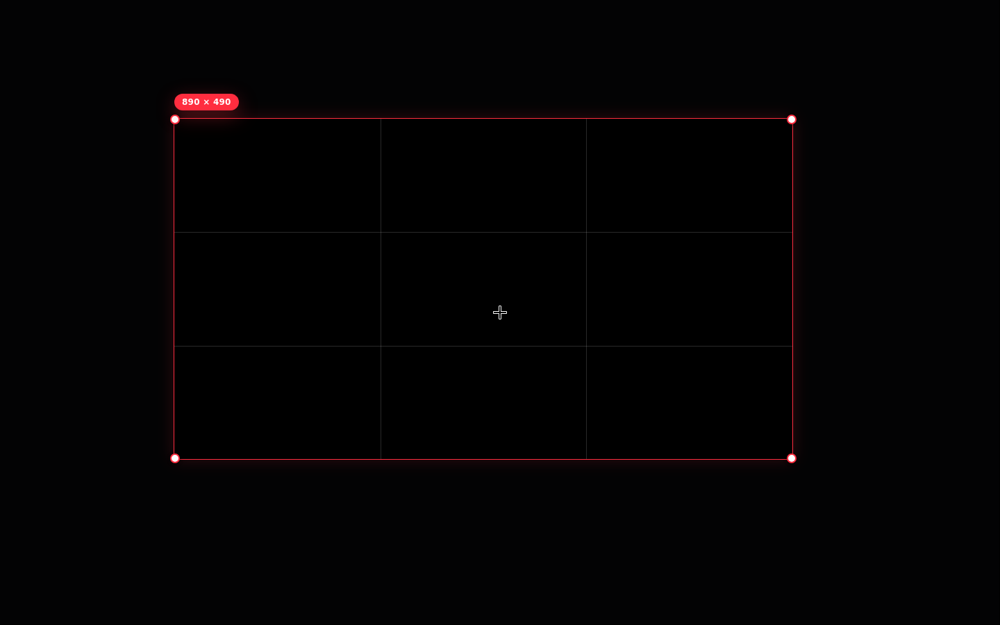
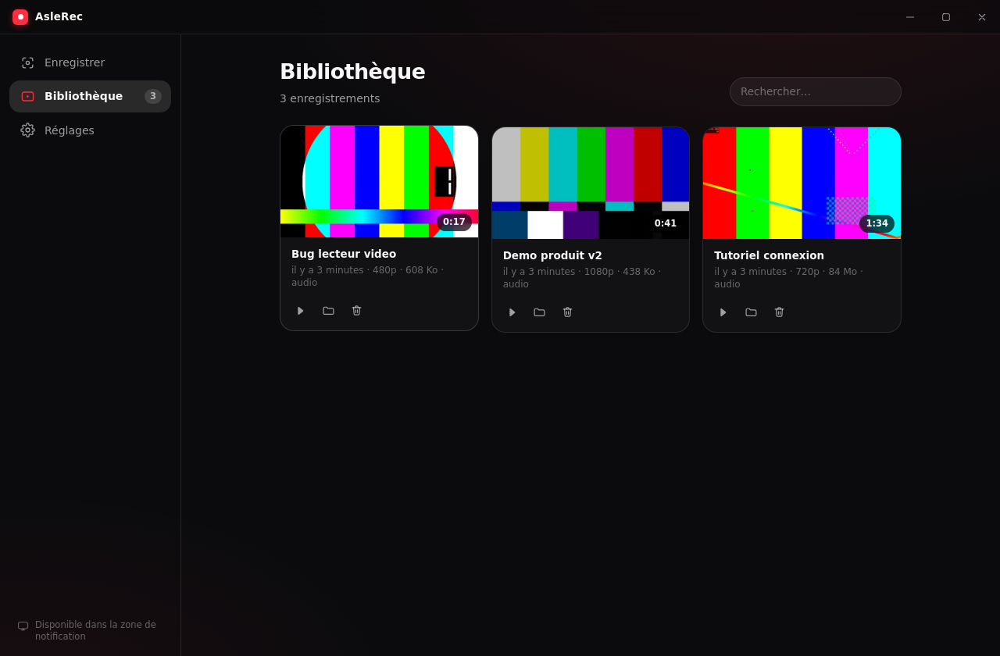
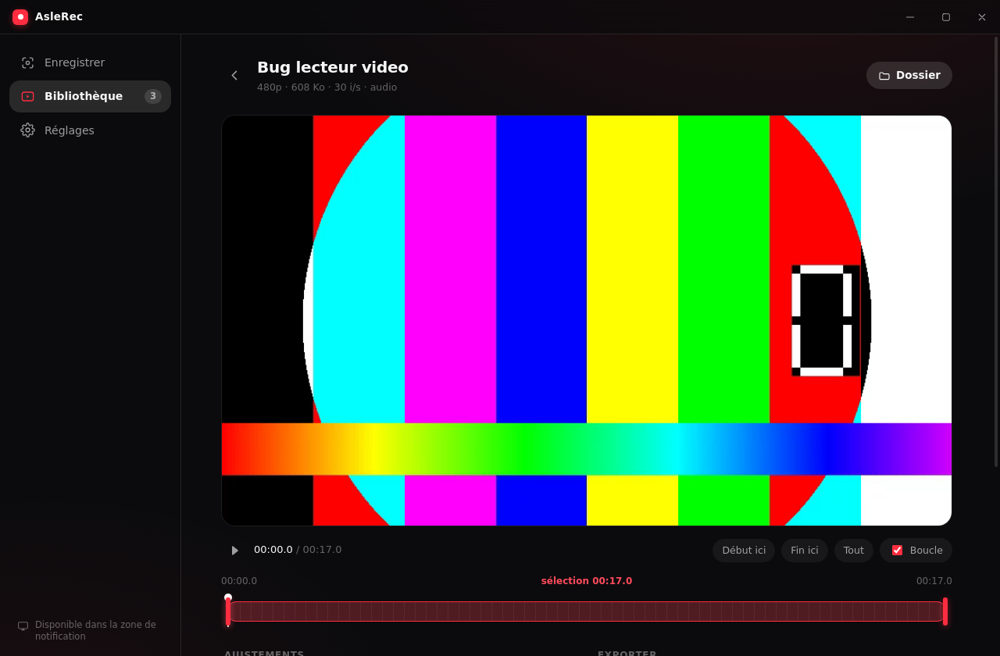
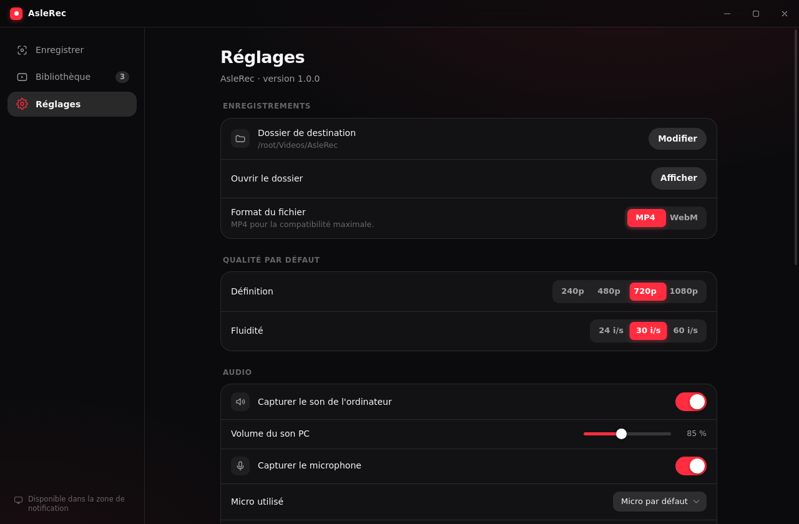

Sélection de zone
Comme Maj + Win + S, mais ça filme. Tracez le rectangle, l'enregistrement démarre tout seul.
Un raccourci, un rectangle, c'est parti. Le son de l'ordinateur et votre voix sont capturés ensemble, et la découpe se fait sans quitter l'application.
Gratuit, open source, sans compte ni publicité.

AsleRec fait une chose : capturer un bout d'écran proprement, puis vous laisser le découper. Pas de scènes, pas de sources, pas de configuration à apprendre.
Comme Maj + Win + S, mais ça filme. Tracez le rectangle, l'enregistrement démarre tout seul.
Les deux sources sont capturées et mixées, chacune activable et dosable séparément avant ou pendant l'enregistrement.
Une timeline avec deux poignées. Gardez le passage utile, jetez le reste, ou exportez juste un extrait dans un fichier à part.
Un cadre à la souris directement sur le lecteur, avec repères des tiers. Utile quand la zone choisie était un peu trop large.
Récupérez la bande son seule en MP3, M4A ou WAV, sur toute la durée ou seulement sur la sélection.
Ils fonctionnent même quand la fenêtre est fermée : AsleRec attend dans la zone de notification, prêt à démarrer.
De la première ouverture au fichier final, en quatre étapes.
Au premier lancement, un court assistant vous demande le dossier de destination, la qualité par défaut et si AsleRec doit démarrer avec Windows. Tout reste modifiable ensuite dans les réglages.
Chaque enregistrement terminé y est écrit automatiquement, nommé
AsleRec 2026-07-28 14-32-08.mp4 — un tri par nom suffit
donc à les remettre dans l'ordre.

Ctrl + Maj + R assombrit l'écran et affiche un réticule. Cliquez-glissez : les dimensions exactes en pixels s'affichent pendant le tracé.
Un décompte de 3 secondes vous laisse le temps de vous placer, puis une barre flottante apparaît avec le chronomètre, la pause et l'arrêt. Elle n'apparaît pas dans la vidéo.

Capture réalisée sur fond noir pour la démonstration : à l'usage, l'intérieur du cadre est transparent et laisse voir votre écran.
Vignette, durée, définition, poids et présence d'une piste audio : chaque enregistrement est résumé d'un coup d'œil. Un clic sur le nom le renomme, un clic sur la vignette ouvre l'éditeur.
La bibliothèque se réconcilie avec le dossier de sortie à chaque ouverture : les vidéos que vous y déposez à la main y apparaissent, celles que vous supprimez en disparaissent.

Déplacez les deux poignées de la timeline pour cerner le passage voulu ; la lecture boucle sur la sélection, vous voyez donc exactement ce qui sera exporté.

Actifs partout dans Windows, même application fermée. Tous personnalisables dans Réglages → Raccourcis clavier : cliquez sur le champ et appuyez sur la combinaison voulue.
| Action | Raccourci | Détail |
|---|---|---|
| Enregistrer une zone | Ctrl + Maj + R | Ouvre le calque de sélection |
| Enregistrer l'écran entier | Ctrl + Maj + F | Écran où se trouve le curseur, sans étape intermédiaire |
| Arrêter | Ctrl + Maj + S | Termine et écrit le fichier |
| Pause / reprise | Ctrl + Maj + P | Suspend sans couper l'enregistrement |
Le préréglage de définition est un plafond, pas une cible : une zone de 300 pixels de haut enregistrée en « 720p » reste nette à sa taille réelle au lieu d'être agrandie et floue.
720p convient à presque tout : lisible, léger, rapide à envoyer. 1080p pour du texte fin ou du code. 480p et 240p quand le poids du fichier compte plus que le détail.
30 i/s par défaut, suffisant pour une démonstration d'interface. Montez à 60 i/s pour du jeu ou des animations rapides, descendez à 24 pour alléger.
MP4 (H.264 + AAC) par défaut — lisible partout, acceptable par tous les sites. WebM reste disponible dans les réglages si vous le préférez.

FFmpeg est déjà inclus dans l'application : il n'y a rien d'autre à installer.
AsleRec-Setup-1.0.0.exe depuis la
dernière release.
L'installeur n'étant pas signé numériquement, Windows SmartScreen peut afficher un avertissement : Informations complémentaires puis Exécuter quand même.
git clone https://github.com/VeqtaDev/AsleRec.git
cd AsleRec
npm install
npm run dev # lancer en développement
npm run dist # construire l'installeur
npm run dist doit être exécuté sous Windows : le
paramétrage de l'icône et des métadonnées de l'exécutable passe par
rcedit, qui exige Wine 32 bits sur Linux.
Vérifiez que Capturer le son de l'ordinateur est activé dans les réglages, et que le volume associé n'est pas à 0 %.
La capture passe par la boucle audio de Windows : si aucun son ne sort effectivement des haut-parleurs pendant l'enregistrement — par exemple parce que l'application source est en sourdine — la piste sera silencieuse.
Non. Le moteur de capture tourne dans un processus séparé et l'enregistrement continue. La croix de la fenêtre range simplement AsleRec dans la zone de notification, près de l'horloge.
Pour quitter réellement l'application, utilisez Réglages → Quitter, ou le menu de l'icône dans la zone de notification.
Non, ni elle ni le calque de sélection. Les deux sont marqués comme protégés contre la capture, une fonction de Windows 10 et 11 qui les exclut de tout enregistrement d'écran.
Dans le dossier choisi au premier lancement — par défaut
Vidéos\AsleRec. Vous pouvez en changer à tout moment
dans Réglages → Dossier de destination.
Les anciens fichiers ne sont pas déplacés, mais la bibliothèque indexera les vidéos déjà présentes dans le nouveau dossier.
Pas directement : AsleRec capture un écran ou une zone rectangulaire de cet écran. Tracez la zone autour de la fenêtre voulue — le résultat est identique tant que la fenêtre ne bouge pas.
Non, cette action remplace définitivement l'enregistrement. Si vous hésitez, préférez Enregistrer l'extrait à part : un nouveau fichier est créé et l'original reste intact.
Le nouveau fichier n'écrase l'ancien qu'une fois l'encodage terminé avec succès : une coupure de courant en cours de traitement ne détruit pas la vidéo de départ.
C'est attendu : l'exécutable n'est pas signé avec un certificat d'éditeur, qui est payant. Cliquez sur Informations complémentaires puis Exécuter quand même.
Le code source est intégralement public, et l'installeur est construit automatiquement par GitHub Actions à partir de ce code — vous pouvez vérifier chaque étape dans l'onglet Actions du dépôt.
Electron pour la fenêtre, React pour l'interface, l'API média de Chromium pour la capture et FFmpeg pour tout le reste.
Les rapports de bug et les propositions sont les bienvenus dans les issues du dépôt.
npm run typecheck # vérification TypeScript
npm run build # bundles de production
npm run icons # régénérer icônes et bandeauProcessus principal : cycle de vie, sessions d'enregistrement, fenêtres, raccourcis globaux, appels FFmpeg.
Pont contextuel typé. Le rendu ne touche jamais directement à Node ni au système de fichiers.
Quatre pages : interface principale, calque de sélection, barre flottante et moteur de capture invisible.
Types et noms de canaux communs aux deux côtés, pour que le compilateur attrape les désaccords.